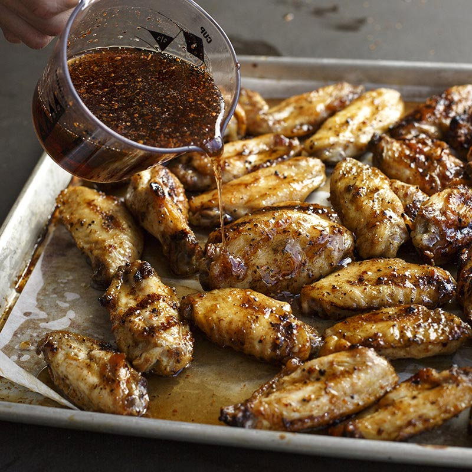

Mesquite BBQ Wings

Craving that BBQ flavor? These wings have got your back!
I think these are the best wings in the entire world. These easy to make wings are the perfect solution to hunger in your household.
No joke, these will fill you up, and treat you right!
Ingredients
For the mesquite sauce:
- 1/2 cup ketchup
- 1/3 cup honey
- 2 Tbsp Grill Mates Mesquite Marinade
For the chicken wings:
- 5 pounds chicken wing pieces (adjust serving sizes to your liking)
- 2 tablespoons vegetable oil
- 1/4 cup McCormick Grill Mates Mesquite Season, divided
- 1 cup pancake syrup
- 2 tablespoons lemon juice
Steps
For the mesquite sauce:
- Combine 2 tablespoons of reserve marinade with ketchup and honey.
- Brush sauce on wings for last minutes of cooking.
For the chicken wings:
- Toss wings with oil in large bowl. Sprinkle with 1 tablespoon of the Mesquite Seasoning; toss to coat evenly.
- Mix pancake syrup, lemon juice and remaining 3 tablespoons Mesquite Seasoning. Set aside.
- Grill wings over medium-high height 15 to 18 minutes or until cooked through, turning frequently. Drizzle wings with half of syrup mixture.